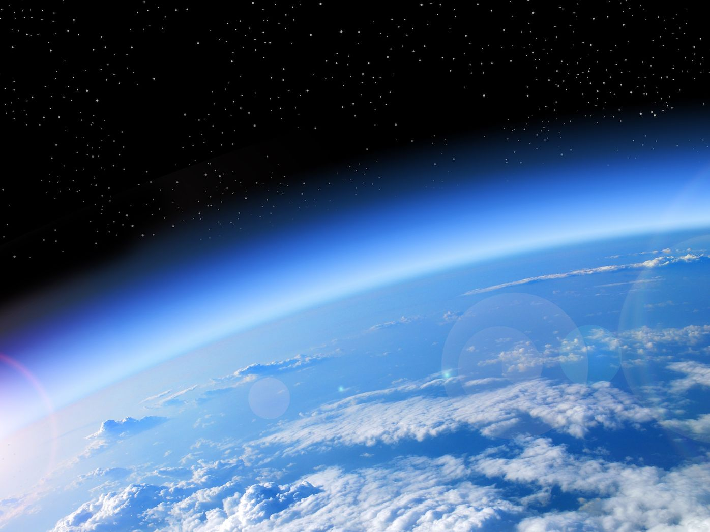

9 Earths
9 Earths


Earth’s atmosphere is a layer of gases that surrounds our planet. Some of these gases, like carbon dioxide and methane, trap heat from the sun. This makes the planet warm enough to live on. This is like how a green house keeps plants warm, so we call this the greenhouse effect. Today, human activities are adding too much greenhouse gas to the atmosphere. This is trapping too much heat, disrupting the Earth’s natural balance and leading to climate change.
The atmosphere is a critical layer of gases surrounding the Earth, playing an essential role in supporting life and regulating our climate. It is only thing standing between us and the void of space. Yet we treat it like a disposable asset. The atmosphere is sensitive to changes, making it a primary focus in understanding climate change, particularly the increase in global temperatures linked to human activities, like fossil fuel combustion and deforestation. This rise in temperature is largely due to the greenhouse effect, where certain gases trap heat, leading to higher average temperatures than would occur in the absence of an atmosphere. We are emitting 162 million tonnes of CO2 every single day. As a result, current and future generations will experience a hotter and a more dangerous world. They are responsible for the least amount of greenhouse gas emissions, but the effects will dominate their whole lives.